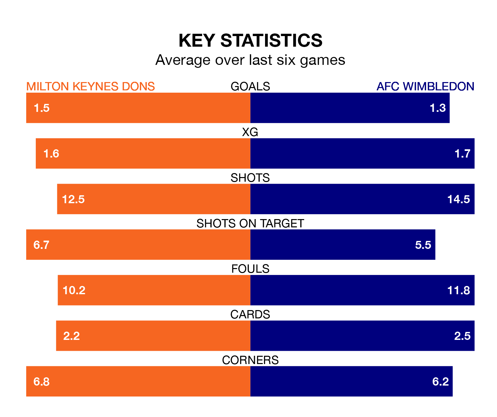

Milton Keynes Dons host AFC Wimbledon on Tuesday at Stadium mk in EFL League Two.
In their last league match, on Saturday, Milton Keynes lost to Morecambe 2-1 at home, with their goal scored by Max Dean.
Wimbledon also lost, 2-0 away at Wrexham on January 13.
In the last 10 years, Milton Keynes and Wimbledon have played each other on 12 occasions. Milton Keynes won six of them, Wimbledon two, and they drew four times.
On average, Milton Keynes Dons scored 1.4 goals and AFC Wimbledon 0.9 in those matches.
Their last meeting was on April 9 2022, when they played out a 1-1 draw.
With 42 goals in 26 games so far this season, Milton Keynes are scoring more than average in the league with 1.6 goals per game. And they are conceding fewer than average, letting in 34 goals at a rate of 1.3 per game.
Wimbledon are also above average scorers, with 1.6 goals per game, compared to a league average of 1.5. They have conceded 1.2 goals per game.
In Alex Bass, AFC Wimbledon can rely on one of the league's safest pair of hands. He has kept nine clean sheets in his 26 appearances this season in EFL League Two.
In Milton Keynes Dons' net, Craig MacGillivray has six clean sheets in 24 games. He has conceded a goal every 83 minutes, only slightly more often than the 84 minutes between goals for Bass.
The home side are seventh in the table after 26 games, of which they have won 12 and drawn six, earning 42 points.
The visitors are three places behind Milton Keynes in 10th, with 10 wins and nine draws putting them on 39 points.
Milton Keynes are in reasonable form in EFL League Two, with four wins and two losses from their last six games.
With two wins and two draws over that period, Wimbledon's form is worse – they have taken eight points from 18, compared to Milton Keynes Dons' 12.
Updated: 09:18 (UTC), 23/01/24